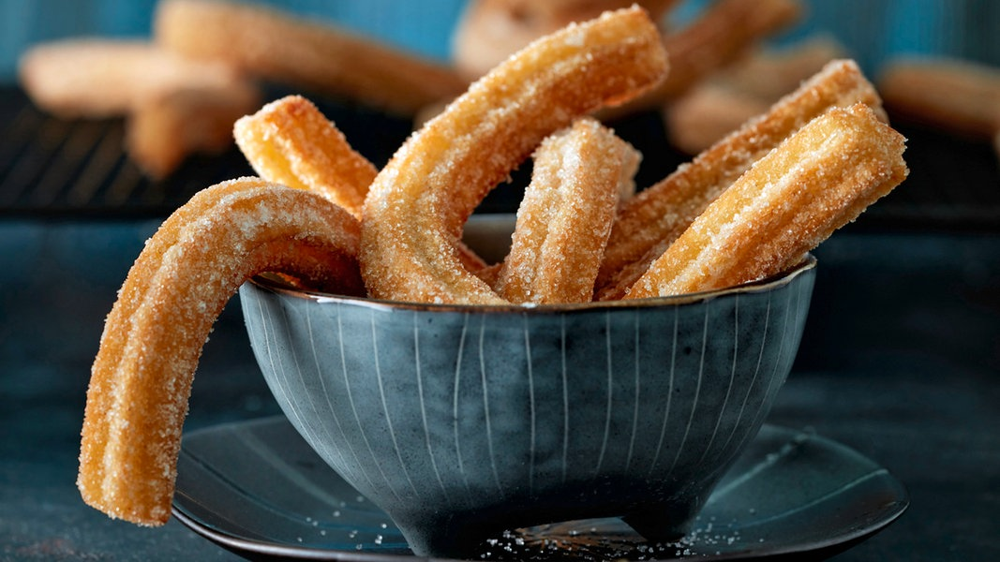

Churros

Bowl de Churros listos para comer
Los churros son una autentica receta española ideal para cualquier
dia del año. Grandes y jovenes disfrutan de este delicioso plato
tipicamente acompañado de un espeso chocolate caliente.
- 250ml de agua
- 20gr de azúcar
- 1 pizca de sal
- 55gr de mantequilla
- 150gr de harina
- 1 huevo
- 2lt aceite de freir
- Hervir el agua con azúcar, sal y la mantequilla en una cacerola.
- Retire la sarten del fuego, agregue la harina de una vez y revuelva.
- Vuelva a colocar la olla en la hornalla y deje que la mezcla hierva
Vuelva a colocar la olla en la hornalla y deje que la mezcla hierva a
fuego lento durante aproximadamente un minuto. Revuelva hasta que se
forme una bola y se forme una capa blanca en el fondo de la sarten
Verter la masa en un bol.
- Batir el huevo con un tenedor y agregalo de a poco a la mezcla aun caliente
integrandolo con una cuchara de madera.
- Llenar una churrera o una manga pastelera con pico de estrella con la mezcla
- Calentar el aceite para freir en una cacerola alta a 180°.
- Coloque la masa en tiras largas en el aceite y corte con una tijeras a la longitud deseada.
Freir los churros 3-5 minutos. Sacar con espumadera, colocar sobre papel absorbente y
agregar azúcar a gusto.